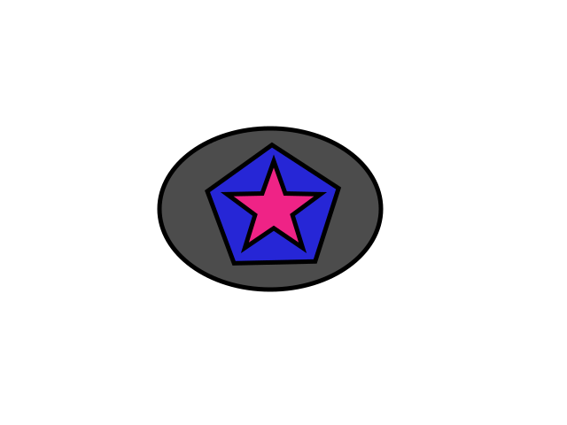

Copycat
Nu är jag klar med laboration 3. Här är en länk såm ni kan klicka på för att se resultatet.
Länk till laboration 3.
Skrivet av Jenny Smedman, 2014-11-04
Nu är jag klar med laboration 3. Här är en länk såm ni kan klicka på för att se resultatet.
Länk till laboration 3.
Skrivet av Jenny Smedman, 2014-11-04
För er som har läst min presentation så vet ni att jag har en liten mops som heter daisy. För att ni ska förstå vilken underbar hundras det är så tänkte jag skriva några rader om Daisy och rasen mops.
Mopsen har sitt ursprung i Kina och kom till Europa vi handelsvägar på 1500-talet. Mopsen har funnits i Sverige sedan 1600-talet och är idag en av de mest populära hundraserna. Mopsen lever mellan 10-15 år och känns igen på sin lilla kompakta kropp och platta ansikte. Mopsen är glad, iteligent och livlig. Mopsen är även en lättlärd hundras som passar perfekt som första hund.
Jag har haft min mops Daisy i 2 år snart. När jag hämtade henne var hon inte större än min handflata. Jag har alltid velat ha hund men pågrund av att min pappa är alergisk så kunde inte detta bli av förrän jag flyttade hemmifrån. När jag flyttade från Norrtälje till Kalmar började jag genast kolla på hundvalpar. Valet stod mellan fransk bulldog, bostonterrier eller mops. När jag fått ihop pengarna som behövdes så fick jag kontakt med en person vars mops tik fått valpar. Jag hyrde en bil och åkte ner för att kolla på dom. Och låt mig säga så här, åk aldrig och kolla på en valp om du inte bestämt dig för att köpa en för du kommer inte kunna åka därifrån utan en.
Daisy blev genast familjens lilla clown och fick all uppmärksamhet en liten hund kan få. Hon fick dessutom mig att orka gå igenom svåra tider och beslut. Hon är min bästa vän och vad som än händer så kan jag alltid lita på att hon blir lika glad när hon ser mig.
Skrivet av Jenny Smedman, 2014-10-09
Video med tillstånd av Big Buck Bunny
Skrivet av Jenny Smedman, 2014-10-02
Här kommer en länk till min bild som ligger på presentationssidan.
Skrivet av Jenny Smedman, 2014-10-01
Nu har jag skapat en svg-bild (Scalable Vector Graphics).
Skrivet av Jenny Smedaman, 2014-09-30
Hej alla! Detta är mitt första blogginlägg på min nya webbsida. Här kommer jag skriva lite om de laborationer jag gör och hur det går för mig som nybliven student vid webbprogrammerarprogrammet.
Skrivet av Jenny, 2014-09-22